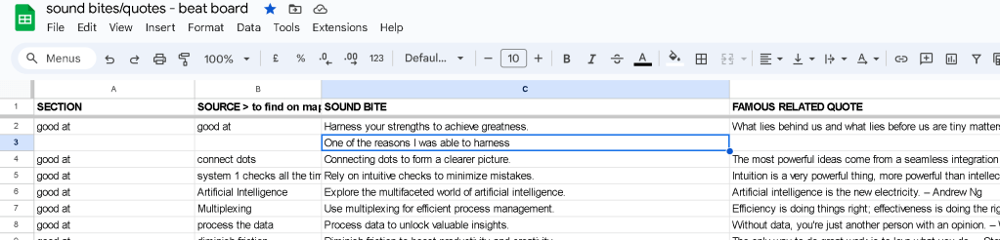

Pair with GPT > Ask before sound bites and the beat board ( Confirmation bolded )
It sounds like you've made significant progress in both your research and development phases. Now, it's time to move forward with your video production project by taking the following steps:
1. Organize Your Research
-
Summarize Key Findings: Extract the most important insights and data from your 100 pages of documentation. Create a concise summary or an executive summary that highlights the critical points.
-
Categorize Information: Divide your research into categories or themes that align with your video’s objectives. This will make it easier to reference during the production process.
2. Refine Your Mindmap
-
Validate Ideas: Cross-check your mindmap ideas with your research findings. Ensure that your ideas are supported by your research.
-
Prioritize Elements: Identify the key elements from your mindmap that are most relevant and impactful for your video. Focus on these elements to structure your content.
>>> I am doing the sound bites and the beatboard before here.
GET BETTER AT SENTENCES

3. Develop a Script and Storyboard
-
Scriptwriting: Start writing a script for your video. Ensure it is clear, engaging, and aligned with your research and mindmap.
-
Introduction: Capture the viewer's attention and introduce the topic.
-
Body: Present your main points, supported by research.
-
Conclusion: Summarize the key takeaways and include a call to action.
-
Storyboard: Create a visual storyboard that outlines each scene of your video. This helps in visualizing how your script will be translated into visual content. > BEATBOARD >>> ON DRAMATIC SEQUENCE
4. Plan Production Logistics
-
Identify Resources: List the resources you need, such as equipment, locations, props, and talent.
-
Schedule: Create a production schedule that includes pre-production, shooting, and post-production timelines.
-
Budgeting: Estimate costs and allocate a budget for your project.
SCRIPT BEFORE PREPRODUCTION
5. Pre-production
- Rehearse: If you have actors or presenters, conduct rehearsals to ensure everyone is comfortable with the script and the flow of the video. >> SOUND BITES SHEET PRACTICE AT SENTENCES
https://docs.google.com/spreadsheets/d/1SzMg1OkCv_CP4sR5smgo9nixTx7EwhNuzaVeyOkyFyc/edit?gid=453526805#gid=453526805

- Scout Locations: Visit and finalize shooting locations. Ensure they fit the aesthetic and practical needs of your video.
6. Production
- Shoot the Video: Follow your storyboard and script closely. Ensure you capture high-quality footage and sound.
EMOJIIS BEASED ON INTONATIONS AND YOUR WORDS THAT EXCITES YOU
- Monitor Progress: Keep track of your schedule and make adjustments as needed to stay on track.
7. Post-production
- Editing: Edit the video to create a cohesive and engaging narrative. Add transitions, effects, and other post-production elements.
Sources and Guides in Canva
-
Review and Revise: Watch the edited video multiple times and make necessary revisions. Get feedback from others if possible.
-
Final Touches: Add music, sound effects, and any other final touches to enhance the video.
Create your library on what you like
Work with people
8. Distribution and Marketing
- Choose Platforms: Decide where you will publish your video (e.g., YouTube, social media, your website).
Funnels and multi level approaches
- Promote: Develop a marketing plan to promote your video. Use social media, email newsletters, and other channels to reach your audience.
Awareness plan
9. Evaluate and Learn
- Analyze Performance: After publishing, track the performance of your video using metrics such as views, engagement, and feedback.
Focus on increase like not views
- Gather Feedback: Collect feedback from your audience to understand what worked well and what can be improved.
Listen and fix
- Reflect and Iterate: Use the feedback and performance data to learn and improve your future video production projects.
Maturity focus to increase
By following these steps, you'll be able to effectively translate your research and development into a polished and professional video.
Imported from rifaterdemsahin.com · 2024